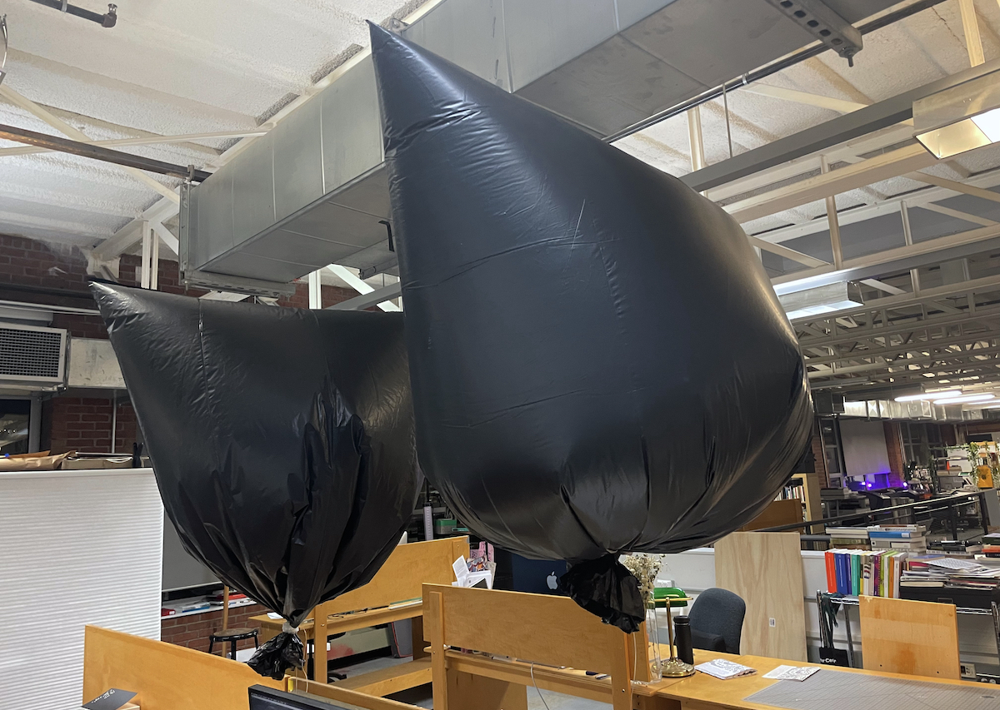
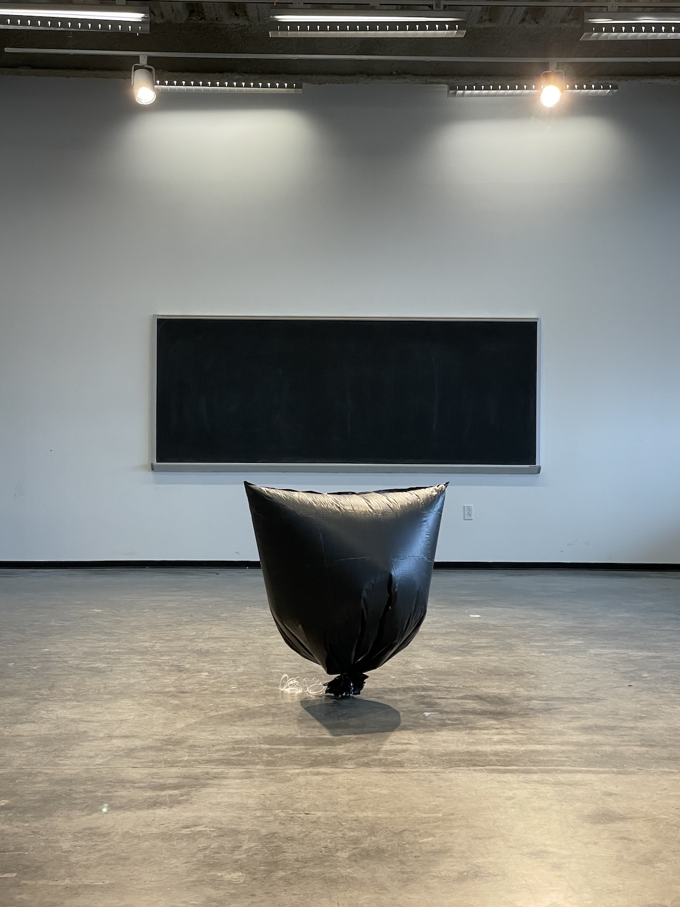
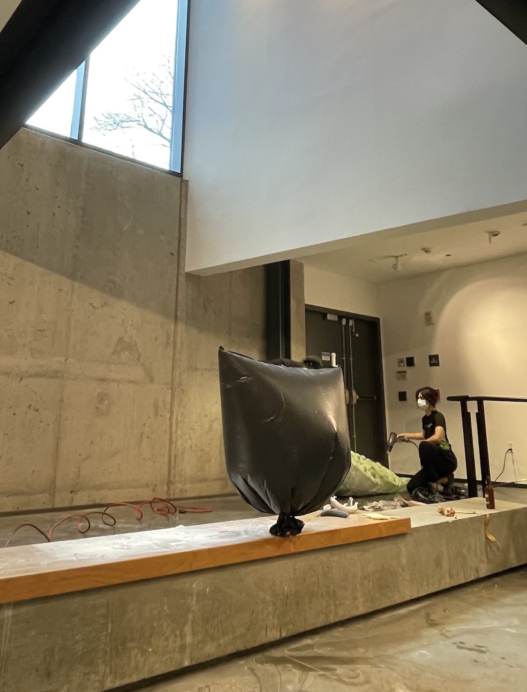

I inflated a trash bag with heillium to dim the light over my head in
the studio, and then another one for my deskmate.
They started to leak after couple days no matter how tight I
tied them up. At some point, a subtle balance was reached when the bags
quietly sat on the edge of our desk.
I tried to capture a
trash bag sitting on the ground.